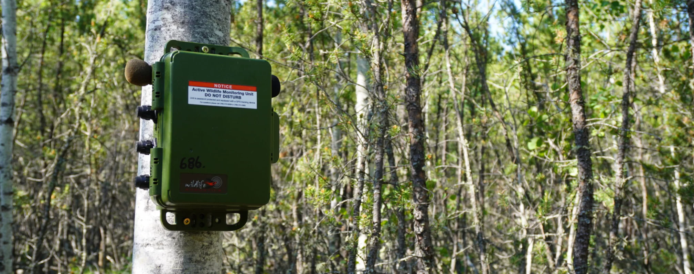
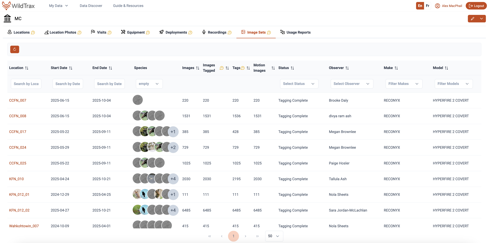
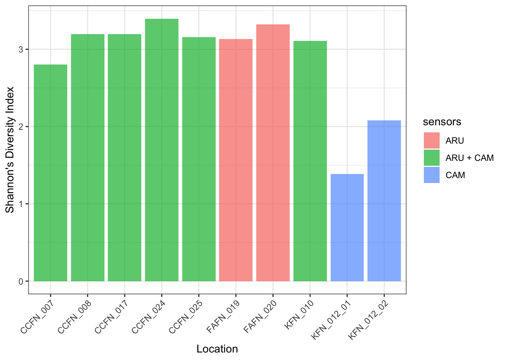
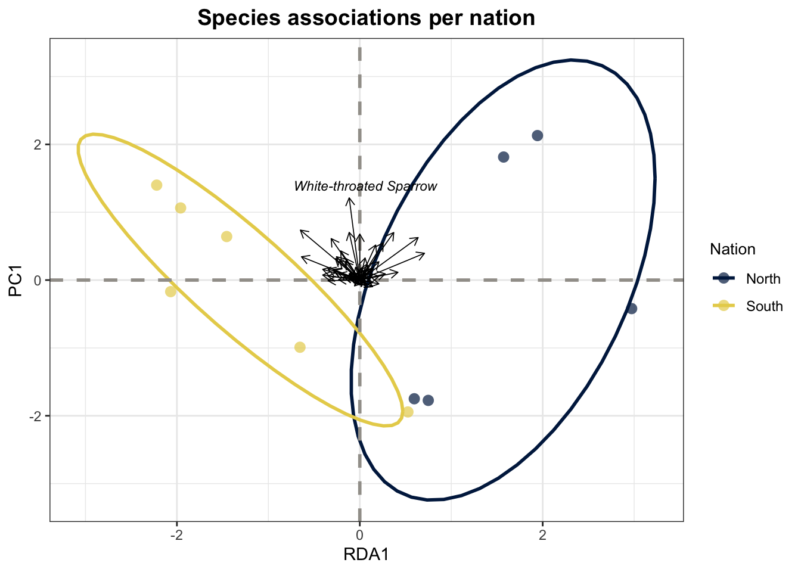

Report on the use of passive acoustic and remote camera monitoring for the Mushkegowuk Council

Abstract
In 2024, the Mushkegowuk Council launched a community-based wildlife monitoring program.This project involves working with Mushkegowuk Nations and using trail cameras (movement triggered cameras) and audio recorders (Song Meter Mini 2) to collect information about the presence, movements and habitat of mammals, birds, and frogs within the Mushkegowuk Territory. Additionally increase capacity for members of Mushkegowuk Nations to engage in monitoring activities. This project provides an opportunity to begin developing capacity amongst community members to combine scientific methods and Indigenous knowledge in the collection and production of baseline information. This report summarizes the key findings from the pilot phase of the initiative and provides recommendations to guide future monitoring efforts.
Note
This report is dynamically generated, meaning its results may evolve with the addition of new data or further analyses. For the most recent updates, refer to the publication date and feel free to reach out to the authors.
Introduction
ARUs and trail cameras are compact environmental sensors that are designed to passively record the environment. ARUs (Shonfield and Bayne (2017)) capture vocalizing species like birds and amphibians, whereas cameras are mainly designed to detect medium to large-sized animals. The use of these sensors for environmental monitoring is growing in use across the globe (Sugai et al. (2018)) as this technology enables resource managers to conduct prolonged surveys with minimal human interference. The subsequent data collected by these units contribute valuable information to metrics that can be used to aid decision-making and management. Given the rapid and ease of accumulating data from these units, maintaining a high standard of data integrity is paramount to ensure future data interoperability and sharing.
The report summarizes the data collected from the ARUs and trail cameras deployed by Mushkegowuk Nations and their community members with the support ofMushkegowuk Council in 2024-2025. To enhance accessibility and reproducibility, the findings will be presented in this online report with fully documented code, allowing future updates as data collection methods become standardized. Additionally, recommendations will be developed to refine data transcription priorities, improve annual reporting methods, and evaluate recommendations for long-term monitoring. The objectives of this report are to:
- Document and standardize the data management and processing procedures for acoustic data collected to ensure consistency and reproducibility.
- Provide a comprehensive report detailing all detected species and the abundance of individuals within the surveyed area.
- Facilitate the publication of data, making it accessible to the community, public, resource managers, academic institutions, and other relevant agencies to promote transparency and collaboration.
- Use evaluation results to establish robust metrics that can inform long-term monitoring and conservation strategies.
Methods
Data collection
A total of 12 were surveyed in 2025 (Figure 1). The list of locations surveyed and the type of sensors placed at each location is also summarized in Table 1.
Data processing
WildTrax is an online platform developed by the Alberta Biodiversity Monitoring Institute (ABMI) for users of environmental sensors to help address big data challenges by providing solutions to standardize, harmonize, and share data. The platform supports data collected from autonomous recording units (ARUs) and camera traps, two of the most widely deployed remote sensing technologies in wildlife monitoring. ARUs passively record acoustic data and are particularly effective for detecting birds and other vocalizing species across large spatial extents, while camera traps provide photographic records of wildlife activity at fixed locations. WildTrax provides an end-to-end workflow for environmental sensor data, from upload and storage through to processing, species tagging, and data publication. A key feature of the platform is its standardized tagging protocol, which allows observers to assign species identifications, individual counts, and behavioural annotations to recordings and images. This standardization enables data collected across different organizations, regions, and time periods to be integrated and compared, which is a critical requirement for large-scale biodiversity monitoring programs.
Data processed through WildTrax can be accessed and downloaded via the platform’s public data portal or through the wildRtrax R package, which provides programmatic access to WildTrax data for downstream analysis. The wildRtrax package facilitates reproducible workflows by allowing users to query, filter, and format WildTrax data directly within R.
Acoustic data
Recordings were uploaded to for processing and can be downloaded from the platform’s Recordings tab in the Organization.

Note
Advanced users can also use wildrtrax with wt_get_sync(api = "organization_recordings", organization = 5843). Ensure you have correct access to the Organization as these projects are not currently published 2026-05-26.
The principal goal for data processing was to describe the acoustic community of species heard at locations while choosing a large enough subset of recordings for analyses. To ensure balanced replication, we randomly selected 8 recordings per location. Four were processed for 3-minutes between the hours of 3:00 AM - 7:59 AM (dawn period) and four between 20:00 - 23:59 PM (dusk period), ideally on four separate dates. Each of the selections were also chosen on days that did not have any inclement weather (heavy rain or wind), which would be unfavourable for bird surveys. Four samples ensures that there is a minimum number of samples being able to detect most species. Tags are made using count-removal (Farnsworth et al. (2002), Sólymos et al. (2018)) where tags are only made at the time of first detection of each individual heard on the recordings. Amphibian abundance was estimated at the time of first detection using the North American Amphibian Monitoring Program with abundance of species being estimated on the scale of “calling intensity index” (CI) of 1 - 3. Mammals such as Red Squirrel, were also noted on the recordings. We also verified that all tags that were created were checked by a second observer to ensure accuracy of detections (Table 2 and Table 3). In addition to human transcription, we also ensured that species were not missed at the location level using additional information from HawkEars (Huus et al. (2025)), a North American multi-species acoustic classifier, at the task level to avoid false negatives, or missed detections by the tagger. After the data are processed in WildTrax, the wildrtrax package is used to download the data into a standard format prepared for analysis. The wt_download_report function downloads the data directly to a R framework for easy manipulation(see wildrtrax APIs).
Camera data
Ten camera deployments were tagged by seven different observers using the WildTrax platform. Prior to manual tagging, MegaDetector (Beery (2023)) was run on the deployments to auto-tag images with humans, vehicles, and false detections. Bounding boxes were also placed around suspected detections. Detections of animals were tagged for species, and mammal detections received additional tags for count, age, and sex where identification was possible. In addition to animal species, observers manually tagged images with humans, vehicles, and false detections that MegaDetector failed to tag. Tags of mammal species were independently verified by two separate observers who did not participate in initial tagging. Count, age, and sex tags were also verified along with species, and detections tagged as “Unidentified” were verified in case species could be determined. Tags such as human or vehicle, were not verified. Following species verification, tags were quality checked for typos and logical inconsistencies.
Analysis
To understand which species were detected and how often, we grouped detections by year and location, then counted the unique species recorded at each site. This allowed us to summarize species richness, the number of different species detected, and visualize how detections varied across sites and over time. We also calculated Shannon’s diversity index for each site, which is a single number that captures both how many species were detected and how evenly individuals were distributed among those species. A higher score indicates a site where many different species were each detected a similar number of times, while a lower score indicates a site dominated by one or two common species with few others present.
Finally, we developed a site prioritization score to help identify which locations should be targeted for future surveys. Each site received a score based on three factors: whether it had been surveyed enough times, how many species were detected there, and whether any species at risk had been recorded. These factors were combined into a single score to rank sites by their monitoring value.
Results
A total of 87 species were detected across all monitoring sites. Species detections by location are summarized in Table 4, including the maximum count recorded for each species. No wildlife was detected by camera at Wahkohtowin_007, and only a single detection series of Canada Lynx was recorded at Wahkohtowin_008, consistent with the low diversity values shown in Figure 2. The reduced species diversity observed at the northern sites likely reflects broader ecoregional differences, with tundra and James Bay Lowlands habitats supporting fewer species than the warmer, more diverse southern forested regions. Overall, we also observed a modest shift in community composition among nation deployments, as illustrated in Figure 3.


Species composition showed partial separation between northern and southern nations along the RDA1 and PC1 ordination axes, with northern sites tending toward positive RDA1 scores and southern sites toward negative scores. While this suggests some difference in community composition between regions, the small number of sites per nation and the degree of ellipse overlap mean this pattern should be interpreted cautiously. White-throated Sparrow showed the strongest directional association among species. Additional sampling at sites will help clarify and confirm this trend in the future.
Discussion
Recommendations
Acoustic
For acoustic sites, it is important to ensure independence of sampling locations to ensure that detections can be inferred in a spatially independent way. CCFN_007 and CCFN_008 were placed <100 m from one another, meaning that the acoustic sampling area each ARU was sampling was likely overlapping, similar and not independent due to the effective detection radius of the ARUs. In a passive acoustic monitoring context, a minimum distance of 300 m is recommended. To ensure the integrity and consistency of a long-term monitoring program, it is important to maintain a consistent survey schedule and timing each year when deploying ARUs. This consistency helps reduce variation caused by seasonal differences in species presence or activity. Additionally, the importance of regular maintenance and calibration of ARU equipment, particularly microphones, which degrade over time and can affect data quality if not properly managed after prolonged field use (see Turgeon, Wilgenburg, and Drake (2017)). Surveying locations with a history of monitoring over multiple years is key to tracking changes in species composition and detecting long-term trends.
Cameras
Cameras should be deployed and oriented to maximize detection probability while minimizing obstructions and false triggers. Camera‐trap studies consistently show that vegetation blockage, poor sightlines, and inappropriate angles can substantially reduce wildlife detections and bias monitoring results. Cameras should therefore be placed along likely travel corridors (e.g., trails, habitat edges, riparian crossings) with clear views of the detection zone, and nearby grasses or branches should be trimmed up to 5 meters to prevent regular wind-driven triggers. Placement height (standard height of 1.5 meters) and angle (90 degrees or straight ahead) should be standardized for target species, and cameras should avoid facing open water or dense vegetation where movement and glare (i.e. facing cameras north) can reduce image quality and increase non-target captures. Implementing these best practices will improve detection consistency across sites and strengthen future occupancy and community assessments.
Site and species prioritization
By including sites with both high and low species diversity, we can better understand how habitats and species ranges are shifting over time. Sites where species-at-risk are present are also prioritized to support conservation efforts. Together, these considerations inform the prioritized list of key sampling sites across the Mushkegowuk Council region, as summarized in Table 5. Further sampling can help to explain species shifts in regions.
As this monitoring is led by Indigenous communities, it is guided by local knowledge, values, and priorities to protect the land and wildlife. By combining new technologies and sampling techniques with traditional knowledge, the program contributes to building a comprehensive, long-term understanding of biodiversity in the region. Ongoing monitoring will help track the impacts of climate change. This information will help to support communities in protecting their environment and cultural connections while strengthening resilience for the future.
References
Abrahms, Briana, Neil H Carter, TJ Clark-Wolf, Kaitlyn M Gaynor, Erik Johansson, Alex McInturff, Anna C Nisi, Kasim Rafiq, and Leigh West. 2023. “Climate Change as a Global Amplifier of Human–Wildlife Conflict.” Nature Climate Change 13 (3): 224–34.
Allan, James R, Oscar Venter, Sean Maxwell, Bastian Bertzky, Kendall Jones, Yichuan Shi, and James EM Watson. 2017. “Recent Increases in Human Pressure and Forest Loss Threaten Many Natural World Heritage Sites.” Biological Conservation 206: 47–55.
Anderson, Marti J. 2001. “A New Method for Non-Parametric Multivariate Analysis of Variance.” Austral Ecology 26 (1): 32–46. https://doi.org/10.1111/j.1442-9993.2001.01070.pp.x.
Beery, Sara. 2023. “The MegaDetector: Large-Scale Deployment of Computer Vision for Conservation and Biodiversity Monitoring.” California Institute of Technology, Pasadena, CA, USA.
Cameron, J., A. Crosby, C. Paszkowski, and E. Bayne. 2020. “Visual Spectrogram Scanning Paired with an Observation–Confirmation Occupancy Model Improves the Efficiency and Accuracy of Bioacoustic Anuran Data.” Canadian Journal of Zoology 98 (11): 733–42. https://doi.org/10.1139/cjz-2020-0103.
Fahrig, Lenore. 2003. “Effects of Habitat Fragmentation on Biodiversity.” Annual Review of Ecology, Evolution, and Systematics 34 (1): 487–515.
Farnsworth, George L, Kenneth H Pollock, James D Nichols, Theodore R Simons, James E Hines, and John R Sauer. 2002. “A Removal Model for Estimating Detection Probabilities from Point-Count Surveys.” The Auk 119 (2): 414–25.
Hanski, Ilkka. 2011. “Habitat Loss, the Dynamics of Biodiversity, and a Perspective on Conservation.” Ambio 40 (3): 248–55.
Huus, Jan, Kevin G Kelly, Erin M Bayne, and Elly C Knight. 2025. “HawkEars: A Regional, High-Performance Avian Acoustic Classifier.” Ecological Informatics 87: 103122.
Lemieux, Christopher J, Thomas J Beechey, Daniel J Scott, and Paul A Gray. 2011. “The State of Climate Change Adaptation in Canada’s Protected Areas Sector.” The Canadian Geographer/Le Géographe Canadien 55 (3): 301–17.
MacKenzie, Darryl I., and Larissa L. Bailey. 2004. “Assessing the Fit of Site-Occupancy Models.” Journal of Agricultural, Biological, and Environmental Statistics 9 (3): 300–318. http://www.jstor.org/stable/1400484.
MacKenzie, Darryl I., James D. Nichols, James E. Hines, Melinda G. Knutson, and Alan B. Franklin. 2003. “ESTIMATING SITE OCCUPANCY, COLONIZATION, AND LOCAL EXTINCTION WHEN a SPECIES IS DETECTED IMPERFECTLY.” Ecology 84 (8): 2200–2207. https://doi.org/https://doi.org/10.1890/02-3090.
MacKenzie, Darryl I, James D Nichols, Gideon B Lachman, Sam Droege, J Andrew Royle, and Catherine A Langtimm. 2002. “Estimating Site Occupancy Rates When Detection Probabilities Are Less Than One.” Ecology 83 (8): 2248–55.
MacKenzie, Darryl I, James D Nichols, Mark E Seamans, and RJ Gutiérrez. 2009. “Modeling Species Occurrence Dynamics with Multiple States and Imperfect Detection.” Ecology 90 (3): 823–35.
Mantyka-pringle, Chrystal S, Tara G Martin, and Jonathan R Rhodes. 2012. “Interactions Between Climate and Habitat Loss Effects on Biodiversity: A Systematic Review and Meta-Analysis.” Global Change Biology 18 (4): 1239–52.
Oksanen, Jari, Frank G Blanchet, Roeland Kindt, Pierre Legendre, Peter R Minchin, Robert B O’Hara, Gavin L Simpson, et al. 2010. “Canonical Analysis of Principal Coordinates: A Useful Method of Constrained Ordination for Ecology.” Ecology 92 (3): 597–611. https://doi.org/10.1890/10-0340.1.
Oksanen, Jari, Gavin L. Simpson, F. Guillaume Blanchet, Roeland Kindt, Pierre Legendre, Peter R. Minchin, R. B. O’Hara, et al. 2025. Vegan: Community Ecology Package. https://vegandevs.github.io/vegan/.
Sattar, Q, ME Maqbool, R Ehsan, S Akhtar, Q Sattar, ME Maqbool, R Ehsan, and S Akhtar. 2021. “Review on Climate Change and Its Effect on Wildlife and Ecosystem.” Open J Environ Biol 6 (1): 008–14.
Shannon, Claude Elwood. 1948. “A Mathematical Theory of Communication.” The Bell System Technical Journal 27 (3): 379–423.
Shonfield, Julia, and Erin M Bayne. 2017. “Autonomous Recording Units in Avian Ecological Research: Current Use and Future Applications.” Avian Conservation & Ecology 12 (1).
Sólymos, Péter, Subhash Lele, and Erin Bayne. 2012. “Conditional Likelihood Approach for Analyzing Single Visit Abundance Survey Data in the Presence of Zero Inflation and Detection Error.” Environmetrics 23 (2): 197–205. https://doi.org/https://doi.org/10.1002/env.1149.
Sólymos, Péter, Steven M Matsuoka, Erin M Bayne, Subhash R Lele, Patricia Fontaine, Steve G Cumming, Diana Stralberg, Fiona KA Schmiegelow, and Samantha J Song. 2013. “Calibrating Indices of Avian Density from Non-Standardized Survey Data: Making the Most of a Messy Situation.” Methods in Ecology and Evolution 4 (11): 1047–58.
Sólymos, Péter, Steven M. Matsuoka, Steven G. Cumming, Diana Stralberg, Patricia Fontaine, Fiona K. A. Schmiegelow, Samantha J. Song, and Erin M. Bayne. 2018. “Evaluating time-removal models for estimating availability of boreal birds during point count surveys: Sample size requirements and model complexity.” The Condor 120 (4): 765–86. https://doi.org/10.1650/CONDOR-18-32.1.
Sugai, Larissa Sayuri Moreira, Thiago Sanna Freire Silva, Jr Ribeiro José Wagner, and Diego Llusia. 2018. “Terrestrial Passive Acoustic Monitoring: Review and Perspectives.” BioScience 69 (1): 15–25. https://doi.org/10.1093/biosci/biy147.
Turgeon, Patrick, Steven L. Van Wilgenburg, and Kiel L. Drake. 2017. “Microphone Variability and Degradation: Implications for Monitoring Programs Employing Autonomous Recording Units.” Avian Conservation and Ecology 12. https://api.semanticscholar.org/CorpusID:89959184.
Ware, Lena, C. Lisa Mahon, Logan McLeod, and Jean-François Jetté. 2023. “Artificial Intelligence (BirdNET) Supplements Manual Methods to Maximize Bird Species Richness from Acoustic Data Sets Generated from Regional Monitoring.” Canadian Journal of Zoology 101 (12): 1031–51. https://doi.org/10.1139/cjz-2023-0044.